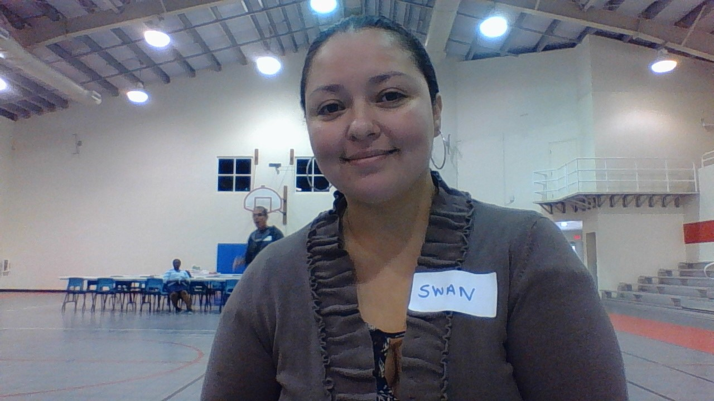
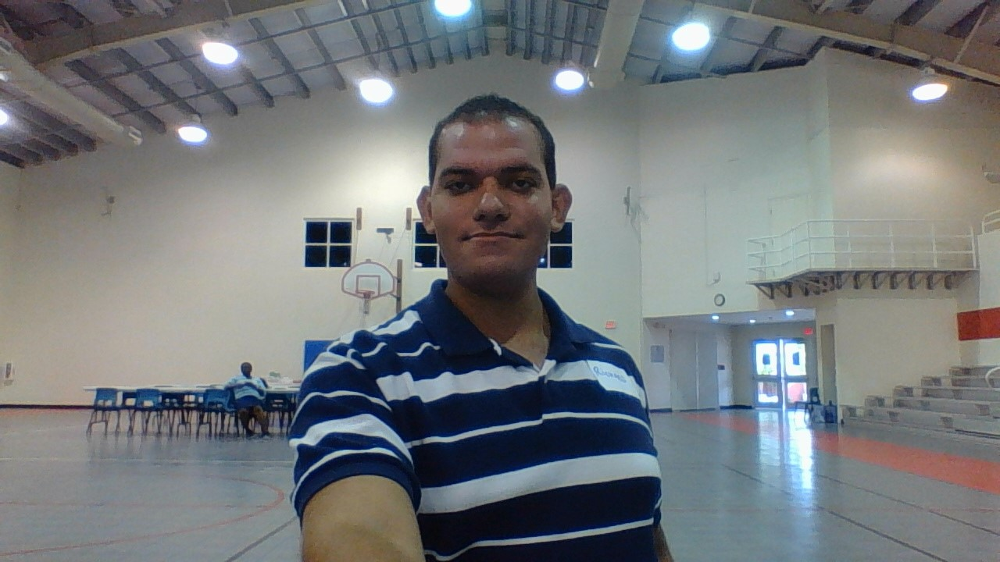
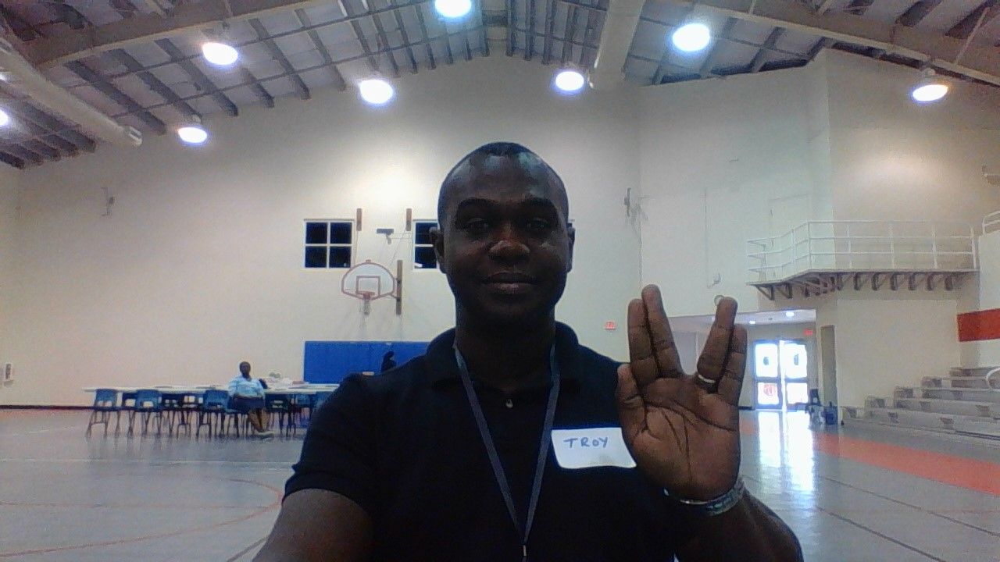

Swan Sandoval
I believe Coding is a really interesting and huge industry that was a little scary at the beginning but little by little I hope to continue learning; between me and you I think I’m getting the hang :grinning:of it.About my personal interests I love cooking and comedy movies, in my spare time I look videos about complicated recipes from scratch, prepare all my ingredients that I will need and then voila I think I’m a chef at Heart!!

Richard Watson
A quiet, intellectual young man, born and raised in Grand Cayman. Not given to seeking excitement in the coliseums and circuses, Richard tends to keep to himself, observing the world around him with a curious eye. He can often be found expanding his mind through his books, or testing it with his games.

Richard Santiago
My interest are all about cars, bikes. I also love cooking I share some of my recipesI’m also fond of dogs, fishes and birds.So if ever you need something to ask about cars, cooking, or dogs I am happy to help.
